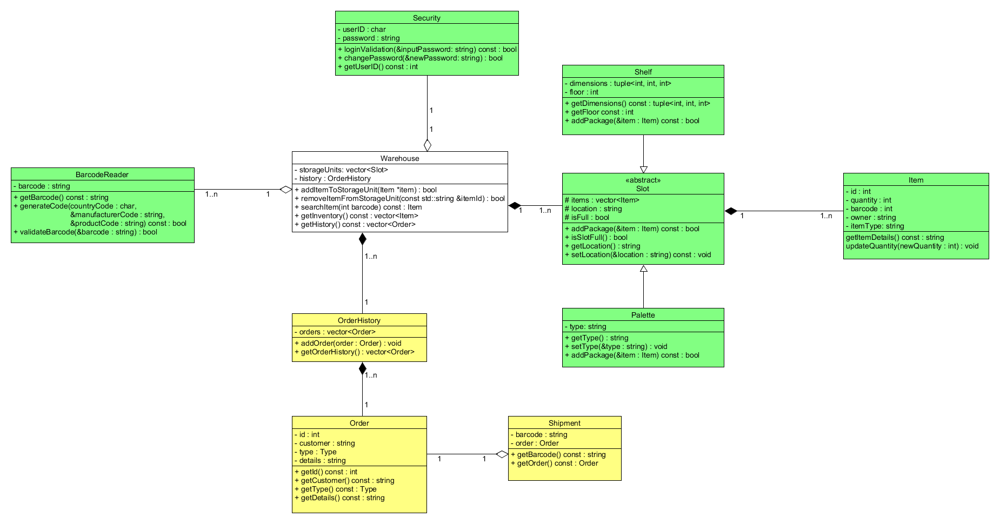

- Wygenerowano przez
 1.10.0
1.10.0
|
PBL Magazyn v0.0.1
PBL MAGAZYN to projekt w języku C++.
|
Aby zbudować i uruchomić ten projekt, będziesz potrzebować:
Sklonuj repozytorium:
Skompiluj projekt:
Jeśli nie masz zainstalowanego Make, możesz zainstalować go za pomocą Homebrew (dla systemów UNIX)
Uruchom projekt:
**(Opcjonalnie) Wyczyść pliki budowania:**
Dla użytkowników VS Code:
Umożliwienie kompilacji poprzez skrót klawiszowy Ctrl+Shift+B
.vscode/tasks.json

Przejdz do głównego katalogu projektu:
Wygeneruj dokumentacje na podstawie pliku Doxyfile:
Lokalizacja index.html:
Wygenerowana dokumentacja korzysta z dodatkowego arkusza stylów, arkusz powinenn już znajdować się w folderze z dokumentacją: Doxygen Awesome
| Zarządzanie i prezentacja 👨🏻🏫 | Programowanie 🧑🏻💻 | Dokumentacja 📄 |
|---|---|---|
| Michał Kucharski | Daniel Śledź | Wiktoria Pyka |
| Łukasz Strama | Antoni Białecki | |
| Antoni Grycmann |